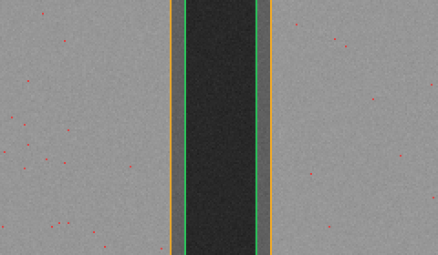
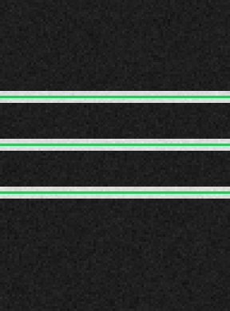

切る・削る・磨く × 高度知能化
刃物ではなく光（レーザー）でウェハを加工する3つの方法を、大学生でも分かるように 図解します。そして、その品質やコストを自動で見張るためにC++でゼロから作ったツールが、 実際に何を測っているのかを一つずつ見ていきます。
刃で削る代わりに、集光した光で「焼く・割る・剥がす」。
ダイヤモンドの刃で切る（ダイシング）・削る（研削）に対し、レーザーは光のエネルギーを一点に集めて 材料を加工します。半導体では主に3つの使い方があります：
溝を上から撮った画像。緑＝溝の端、黄＝熱の影響帯(HAZ)、赤＝飛び散ったカス(デブリ)。

1 2 3計測結果：溝幅 19.5 µm（目標20±4）・深さ指標 0.74・HAZ 4.0 µm/片側・
デブリ率 0.11% → 合格。数値は laser_groove（自作C++）が出力。
近赤外で撮ったウェハ断面。明るい横線＝レーザーが内部に書いた改質層(SD層)。緑＝自動検出。

1 2計測結果：SD層 3 層・ピッチ均一度 100%・HAZ厚 5 px・
表面クラック risk 0.05（表面未到達）→ 合格。土台に既存の stealth_ir を再利用。
レンズやミラー（光学系）が劣化しても、狙った深さちょうどに掘り続ける制御。
レーザーの通り道（光学系）は使うほど汚れ・劣化して、同じ設定でも掘れる深さが減っていきます。 放置すると浅くなる一方（下の「制御なし」）。1ショットごとに深さを見て次のパルスエネルギーを自動補正 すると、目標20µmに張り付きます（「制御あり」）。
| 方式 | 深さの狙いからのズレ(RMS) | 結果 |
|---|---|---|
| 制御なし（固定エネルギー） | 3.5 µm | 浅くドリフト |
| APC制御あり | 0.17 µm | 目標を維持 |
「あと何ショットで整備？」と「レーザーだと1本から何枚多く取れる？」を数値化。
寿命予知：基準ショットの伝達パワーが落ちていく傾きから、下限（15W）に達するまでの 残ショット数(RUL)を予測 ── この例では約200ショット。壊れる前に整備の段取りができます。
KABRAの経済性：SiCは硬くて高価。ワイヤソーは太い切り代を「おがくず」として捨てますが、 レーザー分離層なら切り代が小さく、同じ丸太から多く取れます。
| 方式 | 30mmインゴットの取れ枚数 | コスト/枚 |
|---|---|---|
| ダイヤモンドワイヤ | 50 枚 | $105 |
| レーザー分離（KABRA型） | 66 枚 | $83.8 |
| 差 | +16 枚 | −20% |
DISCOは「切る・削る・磨く」の精密加工装置メーカーで、レーザー加工装置 （ステルスダイシング、アブレーション、KABRA）も主力です。 この解説で見た溝検査・SD層/HAZ検査・自動制御・寿命予知・スライス経済性は、 いずれもレーザー装置の品質と生産性の中核テーマ。
これらを市販ライブラリに頼らずC++17でゼロから実装し、テストで検証しました （ctest全通過・警告ゼロ）。ダイシング・研削に加えてレーザーまで、 「C/C++での画像処理システム開発経験」を実物で示せる位置づけです。